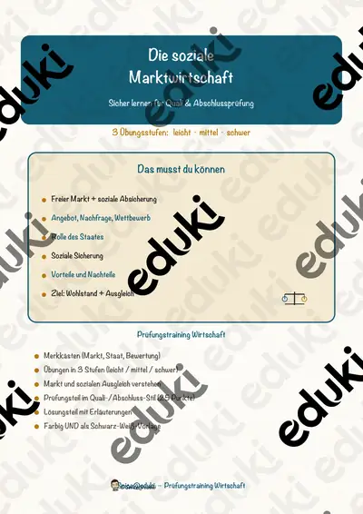
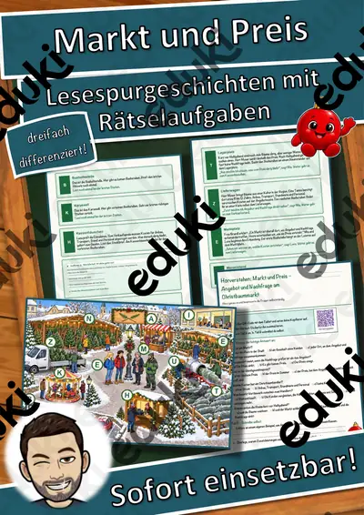

Fair wirtschaften – Wirtschaftsethik zwischen Gewinn und Verantwortung – Lesespurgeschichte mit Rätselaufgaben (Klasse 10)
Fair wirtschaften – Wirtschaftsethik zwischen Gewinn und Verantwortung – Lesespurgeschichte Ethik (Klasse 10)Begib dich mit deiner Klasse auf eine spannende Lesespur zur Wirtschaftsethik! Maja und Kerem besuchen für ihr Referat die Messe „Wirtschaft mit Verantwortung": Am Spieltisch testen sie im Ultimatumspiel, ob Menschen wirklich nur an ihren Vorteil denken, am Stand „Markt und Mitgefühl" lernen sie Adam Smith kennen, in der nachgebauten Fabrikhalle Karl Marx' Kritik an der entfremdeten Arbeit, am Stand „Soziale Marktwirtschaft" den Unterschied zum Liberalismus, am Stand „Lieferkette" das neue Lieferkettengesetz und im Kontor das Ideal des ehrbaren Kaufmanns. Eine Schülerfirma zeigt, dass Gewinn und Verantwortung zusammenpassen. Ihre kleine Münze Talia ist immer dabei. Am Ende jedes Abschnitts verrät ein Hinweis den nächsten Stand auf dem Messeplan – nur wer richtig liest und mitdenkt, findet den Weg und sammelt alle geheimen Buchstaben zum Lösungswort.
Die perfekte Lesespur für den ETHIKUNTERRICHT der 10. Klasse: Sie verbindet motivierendes, sinnentnehmendes Lesen mit anspruchsvollen Gesprächsanlässen über Markt, Moral und globale Verantwortung – und schult zugleich das genaue Arbeiten. Das Material ist SOFORT EINSETZBAR und in DREI DIFFERENZIERUNGSSTUFEN (leicht ★ / mittel ★★ / schwer ★★★) angelegt. Sachlich und parteipolitisch neutral.WICHTIG: Das komplette Material ist sowohl in FARBE als auch in SCHWARZ-WEISS enthalten – ideal zum Sparen von Druckkosten.DAS IST ENTHALTEN
- Lesespurgeschichte in 3 Niveaus (leicht, mittel, schwer)
- farbiger Messeplan als Suchkarte
- Hörverstehen mit QR-Code zur MP3 (selbstständiges Hören mit Kopfhörern)
- vier Aufträge auf dem Weg: ein Zuordnungs-Rätsel, ein Quiz, eine Rechenaufgabe und ein Steckbrief
- Rätselseite (Wörter-Suchsel + Wissensfragen)
- Ausmalbild zum Thema
- ausführliches Lösungsblatt für die Lehrkraft
- alles zusätzlich als komplette Schwarz-Weiß-VarianteSO FUNKTIONIERT DIE LESESPURDie Jugendlichen lesen ab START, entnehmen dem Text einen Hinweis auf einen Stand der Messe, suchen ihn auf dem Plan und lesen dort weiter. An jeder richtigen Station gibt es einen Sammelbuchstaben. Eingebaute Sackgassen (Garderobe, Catering, Pressebereich, Rolltreppe) gehören zwar zur Messe, sind aber keine Stationen und dienen der Selbstkontrolle. Am Ende werden die gesammelten Buchstaben umgestellt und ergeben ein geheimes Lösungswort. (Die Lösungen sind selbstverständlich nur im Lösungsblatt für die Lehrkraft enthalten.)INHALTLICHER SCHWERPUNKTIst in der Wirtschaft alles erlaubt, was Gewinn bringt? Die Jugendlichen prüfen am Ultimatumspiel das Menschenbild des homo oeconomicus und erfahren, dass Menschen Fairness oft wichtiger ist als ein kleiner Vorteil. Sie lernen die historischen Positionen von Adam Smith („Der Wohlstand der Nationen", 1776, und sein Buch über das Mitgefühl, 1759) und Karl Marx (Kritik an entfremdeter Fabrikarbeit) kennen, grenzen die Soziale Marktwirtschaft vom Liberalismus ab und wägen Stärken und Schwächen ab. Aktuelle Fragen – das Lieferkettengesetz seit 2023, Kinderarbeit weltweit – zeigen, dass Verantwortung nicht an der Fabriktür endet. Mit dem Ideal des ehrbaren Kaufmanns und einer Schülerfirma entwickeln sie eigene Lösungsansätze für verantwortliches Wirtschaften.ABGEDECKTER LEHRPLAN (Klasse 10, Ethik)
- Ethik (LehrplanPLUS Bayern) – „Wirtschaftsethik" (Gymnasium Klasse 10): die historische Bedingtheit wirtschaftsethischer Vorstellungen erkennen, Vorstellungen von Karl Marx auf die heutige Wirtschaftswelt beziehen, die Vorstellung vom homo oeconomicus prüfen, Soziale Marktwirtschaft von Liberalismus abgrenzen und aktuelle wirtschaftsethische Probleme analysieren sowie eigene Lösungsansätze für verantwortliches ökonomisches Handeln entwickeln.
- Deutsch – Lesen mit Texten und Medien umgehen: Lesestrategien anwenden, Texten gezielt Informationen entnehmen, sinnentnehmend und selektiv lesen; Zuhören: einem Sachhörtext konzentriert folgen (Hörverstehen mit MP3).
- Mathematik – Rechnen im Sachzusammenhang.
- Fächerübergreifend / Kompetenzen: Wirtschaft und Recht, Politische Bildung, Verbraucherbildung, Globales Lernen, genaues Lesen und Prüfen, kreatives Gestalten (Ausmalbild).
Geeignet für Freiarbeit, Stationenlernen, Vertretungsstunden, Wochenplan, Projekttage und Homeschooling. Klassenstufe 10 (differenziert einsetzbar auch in der Oberstufe).
Ähnliche Materialien

Die soziale Marktwirtschaft – Prüfungstraining Wirtschaft (Klasse 9)

Verantwortung in der digitalen Welt – Lesespurgeschichte mit Rätselaufgaben (Klasse 8)

Adam und Eva Lückentext mit Wortspeicher Hörverstehen und Suchsel

Fairer Handel Lückentext mit Wortspeicher Hörverstehen und Suchsel

Karl Marx Lückentext mit Wortspeicher Hörverstehen und Suchsel

Kampfsport und Respekt – fair kämpfen nach Regeln – Lesespurgeschichte mit Rätselaufgaben (Klasse 8)

Verantwortung für Tiere und die Natur – Lesespurgeschichte mit Rätselaufgaben (Klasse 7)
